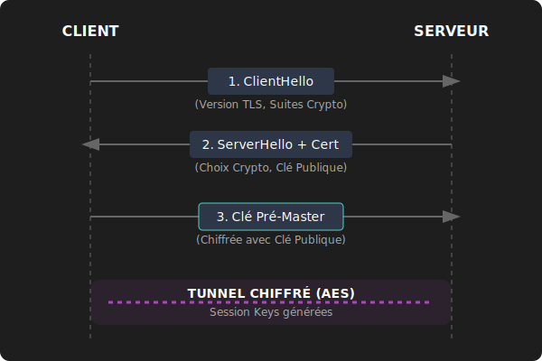
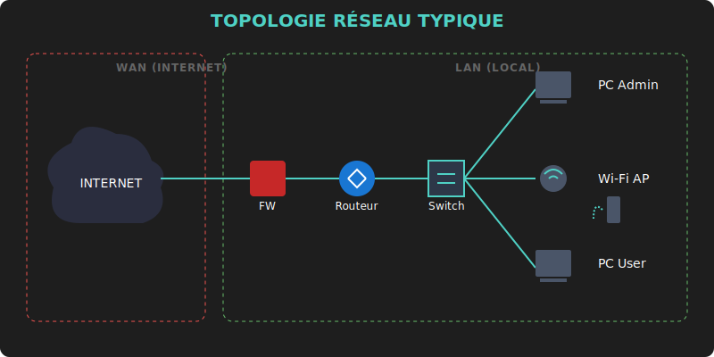
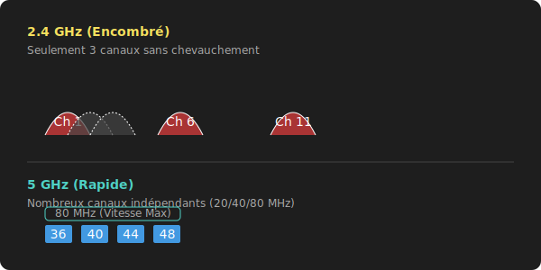
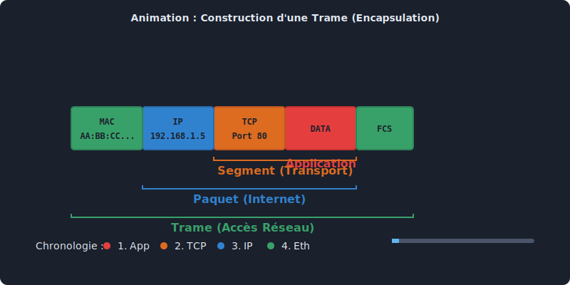
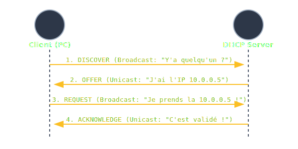

Comprendre comment circule l'information : Architecture, Protocoles et Adressage.
Ce cours interactif est conçu pour rappeler les bases des concepts réseaux modernes. Que vous soyez développeur, administrateur système ou étudiant, comprendre le réseau est indispensable : c'est l'épine dorsale de toutes les applications connectées.
Nous couvrirons ici les fondamentaux théoriques (OSI, TCP/IP), l'infrastructure (Routeurs, Switchs), la sécurité (VPN, Firewalls), jusqu'aux architectures modernes (Cloud, IoT, IPv6). Chaque module va à l'essentiel pour vous donner les clés de compréhension immédiates.
Open Systems Interconnection (7 Couches)
Le modèle OSI (Open Systems Interconnection) est une norme théorique qui standardise la communication entre systèmes informatiques en la découpant en 7 niveaux d'abstraction. C'est le langage universel des ingénieurs réseau.
Pour comprendre l'encapsulation, imaginez l'envoi d'une lettre recommandée :
| # | Couche | Unité (PDU) | Exemples |
|---|---|---|---|
| 7 | Application | Data | HTTP, SMTP |
| 6 | Présentation | Data | TLS, JPEG |
| 5 | Session | Data | RPC, Socket |
| 4 | Transport | Segment | TCP, UDP |
| 3 | Réseau | Paquet | IP, ICMP |
| 2 | Liaison | Trame | Ethernet, Wi-Fi |
| 1 | Physique | Bit | RJ45, Fibre |
Internet est un GAN, interconnectant des millions de réseaux privés et publics via des protocoles communs.
Application → [ DATA ] ↓ Transport → [ TCP Header | DATA ] = Segment ↓ Réseau → [ IP Header | TCP | DATA ] = Paquet ↓ Liaison → [ MAC | IP | TCP | DATA | FCS ] = Trame ↓ Physique → 0101101010101101... = Bits
TCP/IP Suite, Ports Standards
Les protocoles sont les règles de langage qui permettent aux machines de se comprendre. La suite TCP/IP est la base d'Internet, dictant comment les données sont empaquetées, adressées, transmises et reçues.
TCP (Transmission Control Protocol) - Connecté (Handshake SYN-ACK) - Fiable (Garantit l'ordre et l'arrivée) - Plus lent > Web, Email, SSH, Transfert Fichier UDP (User Datagram Protocol) - Déconnecté ("Fire and forget") - Pas de garantie (perte de paquets Ok) - Très rapide > Streaming, VoIP, Jeux Vidéo, DNS
google.com
en IP 142.250.x.x.| Port | Protocole | Service | TCP/UDP |
|---|---|---|---|
| 20/21 | FTP |
Transfert fichiers | TCP |
| 22 | SSH |
Shell sécurisé | TCP |
| 23 | Telnet |
Shell non-sécurisé | TCP |
| 25 | SMTP |
Envoi email | TCP |
| 53 | DNS |
Résolution domaines | UDP/TCP |
| 67/68 | DHCP |
Attribution IP | UDP |
| 80 | HTTP |
Web non-sécurisé | TCP |
| 110 | POP3 |
Réception email | TCP |
| 143 | IMAP |
Réception email (sync) | TCP |
| 443 | HTTPS |
Web sécurisé (TLS) | TCP |
| 3306 | MySQL |
Base de données | TCP |
| 3389 | RDP |
Bureau à distance Windows | TCP |
Avant d'envoyer la moindre donnée sensible, le client et le serveur doivent se mettre d'accord sur une clé de chiffrement.
32 bits, CIDR, Sous-réseaux
L'adresse IP (Internet Protocol) est l'identifiant unique d'une machine sur un réseau. En IPv4, elle est codée sur 32 bits (ex: 192.168.1.1). Le CIDR permet de gérer efficacement les sous-réseaux.
Moyen mémotechnique : "All People Seem To Need Data Processing" (de bas en haut) ou "Après Plusieurs Semaines Tout Respire La Paix" (de haut en bas).
/XX est grand, plus le réseau est petit.192.168.1.0/24
Pourquoi ? Ces adresses ne sont pas routables sur Internet. Elles servent à créer des réseaux locaux (LAN). Pour aller sur Internet, le routeur fait du NAT. Classe A (10.0.0.0/8) Utilisé par les très grandes entreprises. > 16 millions d'IP dispos. Classe B (172.16.0.0/12) Souvent utilisé par Docker et les VPN. > 1 million d'IP dispos. Classe C (192.168.0.0/16) Le standard domestique (Box, TPE/PME). > 65 536 IP dispos.
| CIDR | Masque | Hôtes |
|---|---|---|
| /32 | 255.255.255.255 | 1 (IP unique) |
| /30 | 255.255.255.252 | 2 (Lien P2P) |
| /24 | 255.255.255.0 | 254 (Standard) |
| /16 | 255.255.0.0 | 65 534 |
| /8 | 255.0.0.0 | 16 Millions |
| /0 | 0.0.0.0 | Internet (Tout) |
Hub, Switch, Routeur
Pour construire un réseau physique, nous utilisons des équipements spécifiques qui opèrent à différentes couches du modèle OSI. Comprendre la différence entre un Switch et un Routeur est fondamental.
Connecte les appareils d'un même réseau (LAN). Il est "intelligent" : il apprend les adresses MAC et n'envoie les données qu'au bon destinataire (contrairement au Hub).
Connecte différents réseaux entre eux (ex: LAN <-> Internet). Il utilise les adresses IP pour diriger les paquets (Routage).
| Équipement | Couche OSI | Adresse utilisée | Fonction principale |
|---|---|---|---|
| Hub | 1 (Physique) | Aucune | Répète le signal (bête et inefficace). |
| Switch | 2 (Liaison) | MAC | Connecte les hôtes d'un LAN. |
| Routeur | 3 (Réseau) | IP | Connecte des réseaux (LAN/WAN). |
| Firewall | 3-7 | IP/Ports/App | Filtre et sécurise le trafic. |
| Access Point | 2 (Liaison) | MAC | Donne l'accès Wi-Fi au réseau filaire. |
128 bits, Hexadécimal
IPv4 est épuisé (4.3 milliards d'adresses). IPv6 offre 340 indécillions d'adresses (3.4 x 10^38).
Exemple complet : 2001:0db8:0000:0000:0000:8a2e:0370:7334 Règles de simplification : 1. Omettre les zéros initiaux 2. Remplacer une suite de zéros par "::" (une seule fois) Exemple simplifié : 2001:db8::8a2e:370:7334
2000::/3 (L'équivalent des IP publiques V4).
fe80::/10 (Communication locale uniquement,
auto-configuré).fc00::/7 (L'équivalent des IP privées V4).::1 (L'équivalent de 127.0.0.1).Firewall, VPN, CIA Triad
La sécurité réseau vise à protéger l'intégrité, la confidentialité et la disponibilité des données (CIA). Elle repose sur des équipements (Firewall) et des techniques (Chiffrement, VPN) pour contrer les menaces.
Confidentiality (Confidentialité) Seules les personnes autorisées voient les données. > Chiffrement (AES, TLS), VPN. Integrity (Intégrité) Les données n'ont pas été modifiées. > Hashing (SHA-256), Signatures numériques. Availability (Disponibilité) Le service est accessible quand on en a besoin. > Redondance, Anti-DDoS
IEEE 802.11, Fréquences, Sécurité
Le Wi-Fi (Wireless Fidelity) permet la connexion sans fil via des ondes radio (normes IEEE 802.11). Il évolue constamment pour offrir plus de vitesse (Wi-Fi 6/7) et de sécurité (WPA3).
| Standard | Nom Marketing | Fréquence | Débit Max (Théorique) |
|---|---|---|---|
| 802.11n | Wi-Fi 4 | 2.4 / 5 GHz | 600 Mbps |
| 802.11ac | Wi-Fi 5 | 5 GHz | 3.5 Gbps |
| 802.11ax | Wi-Fi 6 / 6E | 2.4 / 5 / 6 GHz | 9.6 Gbps |
| 802.11be | Wi-Fi 7 | 2.4 / 5 / 6 GHz | 46 Gbps |
Le 2.4 GHz est une autoroute embouteillée (seulement 3 voies). Le 5 GHz est une autoroute large.
Pour les entreprises : WPA-Enterprise (802.1X) avec serveur Radius (chaque utilisateur a son login/mdp).
Encapsulation & RFC
C'est le modèle réel et pragmatique d'Internet.
Observez l'animation ci-dessous : chaque couche ajoute une enveloppe (Header) par dessus les données.
| Couche TCP/IP | Rôle Concret | Unités & Protocoles |
|---|---|---|
|
4. Application
(OSI 5, 6, 7)
|
Parle à l'utilisateur. Formate les données (HTML, JSON). | Data HTTP, DNS, SSH |
|
3. Transport
(OSI 4)
|
Gère la fiabilité (TCP) ou la vitesse (UDP). Définit les Ports. | Segment TCP, UDP |
|
2. Internet
(OSI 3)
|
Trouve le chemin (Routage). Définit l'Adresse IP. | Paquet IP, ICMP |
|
1. Accès Réseau
(OSI 1, 2)
|
Envoie les bits sur le câble/onde. Adresse MAC. | Trame / Bit Ethernet, Wi-Fi |
Physique (1) |
Commandes essentielles
Savoir diagnostiquer un problème est LA compétence n°1. Ces commandes terminal sont universelles (Windows/Linux) pour tester la connectivité et le chemin.
ping <ip> Vérifie la connectivité (temps de réponse). > ping google.com ipconfig / ifconfig Affiche l'IP, le masque, la passerelle. > ipconfig /all nslookup <domaine> Interroge le serveur DNS. > nslookup google.com tracert / traceroute Affiche le chemin (routeurs) jusqu'à la destination. > tracert 8.8.8.8 netstat -an Liste toutes les connexions actives et ports ouverts.
Outil graphique puissant pour capturer et analyser les paquets en temps réel. - Voir les handshakes TCP - Décoder les protocoles - Identifier les problèmes réseaux
Permet de monitorer l'état des équipements (CPU routeur, bande passante switch, température) et d'envoyer des alertes (Traps).
Concepts Modernes
Le Cloud Computing n'est pas "magique", c'est juste l'ordinateur de quelqu'un d'autre (Amazon, Google, Microsoft) que vous louez à la seconde. L'innovation majeure est l'abstraction du matériel.
Services d'Infrastructure
Ces deux protocoles sont les piliers invisibles du réseau. Sans eux, il faudrait mémoriser des IP (pas de DNS) et configurer chaque machine manuellement (pas de DHCP).
Analogie : Le DNS est le contact de votre téléphone. Vous cliquez sur
"Maman" (Domaine), le téléphone compose le 06.12.34.56.78 (IP).
Analogie : C'est comme un ticket de parking. On vous prête une place (IP) pour une durée limitée (Bail/Lease).
Statique vs Dynamique
Comment un paquet trouve son chemin à travers des milliers de réseaux ? Grâce aux tables de routage des routeurs.
Dest. Network Gateway (Next Hop) Interface 0.0.0.0/0 192.168.1.254 (Box) eth0 (Route par défaut) 192.168.1.0/24 0.0.0.0 eth0 (Directement connecté) 10.0.0.0/8 10.0.0.1 (VPN) tun0
La boussole des paquets
Le routeur est un orienteur. Il ne connaît pas TOUT Internet, il connaît juste son prochain
voisin (Next Hop).
Analogie : Le GPS. À chaque carrefour (Routeur), on décide de tourner à gauche ou à
droite pour se rapprocher de la destination.
| Destination | Masque | Gateway (Passerelle) | Interface |
|---|---|---|---|
| 192.168.1.0 | 255.255.255.0 | 0.0.0.0 (Direct) | ETH0 (LAN) |
| 10.0.0.0 | 255.0.0.0 | 192.168.1.254 | ETH0 |
| 0.0.0.0 (Internet) | 0.0.0.0 | 80.12.34.56 (Box FAI) | WAN (Internet) |
8.8.8.8, il ne matche ni le LAN ni le 10.x.x.x,
donc il utilise la ligne 0.0.0.0 (Défaut) et l'envoie vers le WAN.
L'admin tape les routes à la main. Sûr mais fastidieux. Idéal petits réseaux.
Les routeurs se parlent : "J'ai une route vers X !". Si un câble casse, ils recalculent le chemin (comme Waze).
Segmentation Logique
Pourquoi acheter 3 switchs physiques quand un seul suffit ? Les VLANs permettent de découper virtuellement un switch en plusieurs réseaux isolés.
Bridge, Host, Overlay
Dans le monde des conteneurs, le réseau est virtualisé. Chaque conteneur peut avoir sa propre IP interne, invisible de l'extérieur.
docker network ls Lister les réseaux. docker network inspect bridge Voir les IP des conteneurs connectés. docker run -p 8080:80 nginx Port Mapping : Redirige le port 8080 de l'Hôte vers le 80 du Conteneur.
| Driver | Description | Usage |
|---|---|---|
| Bridge | Par défaut. Réseau privé interne (NAT). | Apps isolées (90% des cas). |
| Host | Partage l'IP de la machine hôte. | Performance max (pas d'isolation). |
| Overlay | Réseau multi-hôtes (Swarm/K8s). | Clusters distribués. |
FAI, IXP, Câbles Sous-marins
Internet n'est pas magique, c'est du matériel. Des câbles sous les océans et des bâtiments remplis de routeurs ultra-puissants.
Des lieux physiques où les FAI s'interconnectent directement pour échanger du trafic (Peering)
sans passer par des intermédiaires coûteux.
Ex: France-IX à Paris.
Le "dernier kilomètre" qui relie l'abonné au réseau.
99% du trafic intercontinental passe sous l'eau (pas par satellite). Ce sont des fibres optiques blindées posées au fond des océans.
SDN, Edge, 5G
On sépare le "cerveau" (Contrôleur) des "muscles" (Switchs). Permet de configurer tout le réseau via une API centralisée au lieu de taper des commandes sur chaque switch.
Au lieu d'envoyer toutes les données IoT au Cloud (lent), on les traite localement (sur la passerelle ou l'antenne 5G) pour une latence minimale.
Offre le "Network Slicing" : découper le réseau en tranches virtuelles garantissant une QoS spécifique (ex: une tranche ultra-sécurisée pour la chirurgie à distance, une tranche haut débit pour Netflix).
Méthodes, Headers, Status Codes
HTTP (HyperText Transfer Protocol) est le protocole de communication du Web. C'est lui qui permet à votre navigateur de demander une page web à un serveur. Comprendre HTTP, c'est comprendre le dialogue entre le client et le serveur.
Une requête se compose de 3 parties : Ligne de Requête, En-têtes (Headers), et Corps (Body).
GET /api/users?id=42 HTTP/1.1 Host: api.example.com User-Agent: Mozilla/5.0 Accept: application/json Authorization: Bearer xyz... (Pas de Body pour GET)
POST /api/users HTTP/1.1 Host: api.example.com Content-Type: application/json Content-Length: 48 {"name": "Alice", "email": "alice@mail.com"}
Le verbe indique l'action que le client veut effectuer.
| Méthode | Action (CRUD) | Body ? | Idempotent ? | Cas d'usage |
|---|---|---|---|---|
| GET | Read | Non | Oui | Lire une ressource (page, user, produit). |
| POST | Create | Oui | Non | Créer une nouvelle ressource (inscription, nouveau post). |
| PUT | Update (Replace) | Oui | Oui | Remplacer une ressource entière. |
| PATCH | Update (Partial) | Oui | Non | Modifier un champ spécifique (changer son email). |
| DELETE | Delete | Non | Oui | Supprimer une ressource. |
Les Headers sont des métadonnées sur la requête/réponse (qui parle, quel format, etc.).
Host : Nom de domaine cible.User-Agent : Qui envoie (navigateur, curl, etc.).Accept : Format de réponse souhaité (JSON, HTML).Authorization : Token d'authentification (Bearer, Basic).Content-Type : Format du Body envoyé.Content-Type : Format du Body (application/json).Set-Cookie : Envoyer un cookie au client.Cache-Control : Durée de mise en cache.Location : URL de redirection (30x).Access-Control-Allow-Origin : Politique CORS.Le code indique si la requête a réussi, échoué, ou nécessite une action.
| Catégorie | Code | Signification | Quand ? |
|---|---|---|---|
| 2xx Succès | 200 |
OK | GET réussi. |
201 |
Created | POST réussi (ressource créée). | |
| 3xx Redirect | 301 |
Moved Permanently | La ressource a déménagé (SEO). |
304 |
Not Modified | Utilisez le cache, rien n'a changé. | |
| 4xx Client Error | 400 |
Bad Request | Requête malformée (JSON invalide). |
401 |
Unauthorized | Non authentifié (token manquant). | |
403 |
Forbidden | Authentifié mais droits insuffisants. | |
404 |
Not Found | La ressource n'existe pas. | |
| 5xx Server Error | 500 |
Internal Server Error | Bug côté serveur (exception non gérée). |
503 |
Service Unavailable | Serveur surchargé ou en maintenance. |
Une requête par connexion (ou Keep-Alive limité). Lent pour charger beaucoup de ressources.
Multiplexage (plusieurs requêtes en parallèle sur une seule connexion TCP). Server Push.
Basé sur UDP au lieu de TCP. Réduit la latence (handshake plus rapide), meilleure gestion des pertes de paquets (pas de "head-of-line blocking"). Utilisé par Google, Cloudflare.